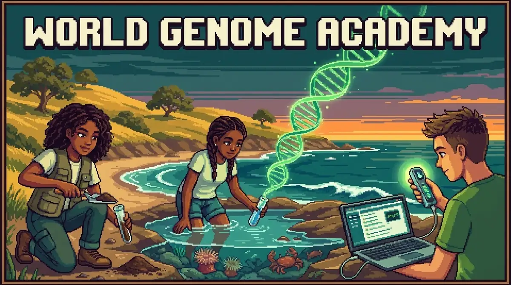
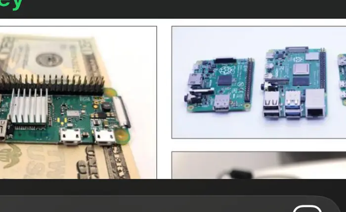
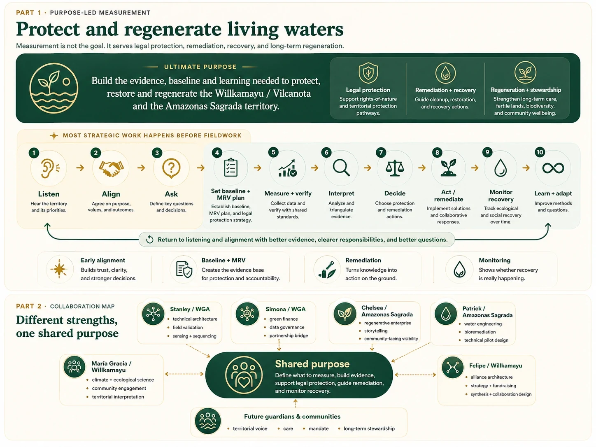
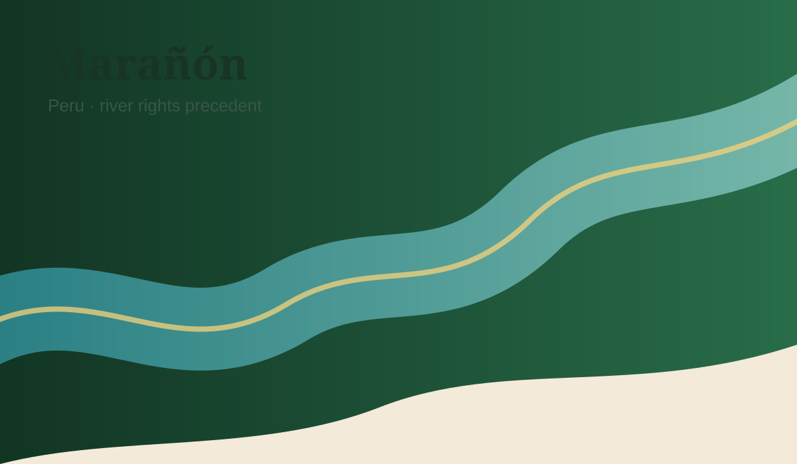
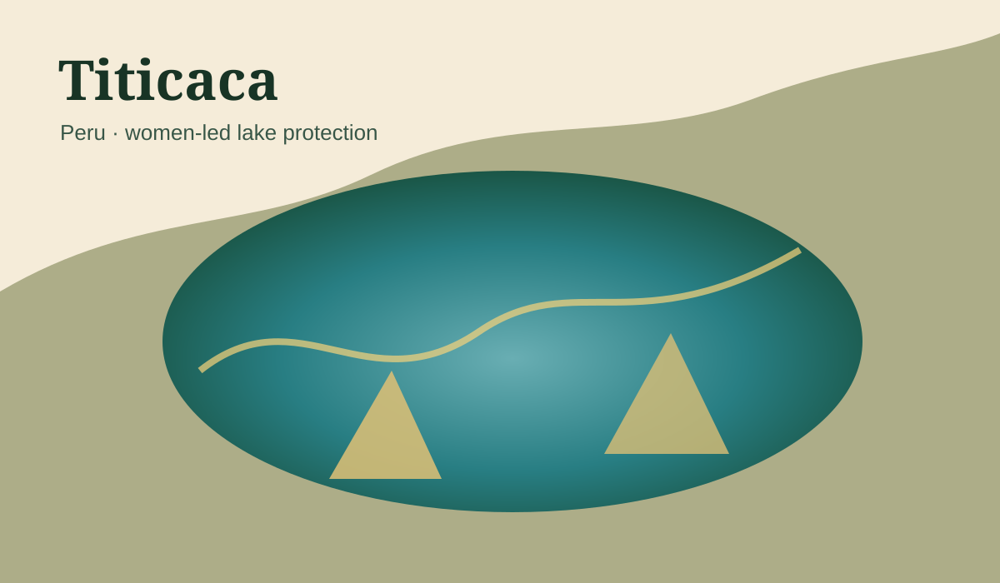
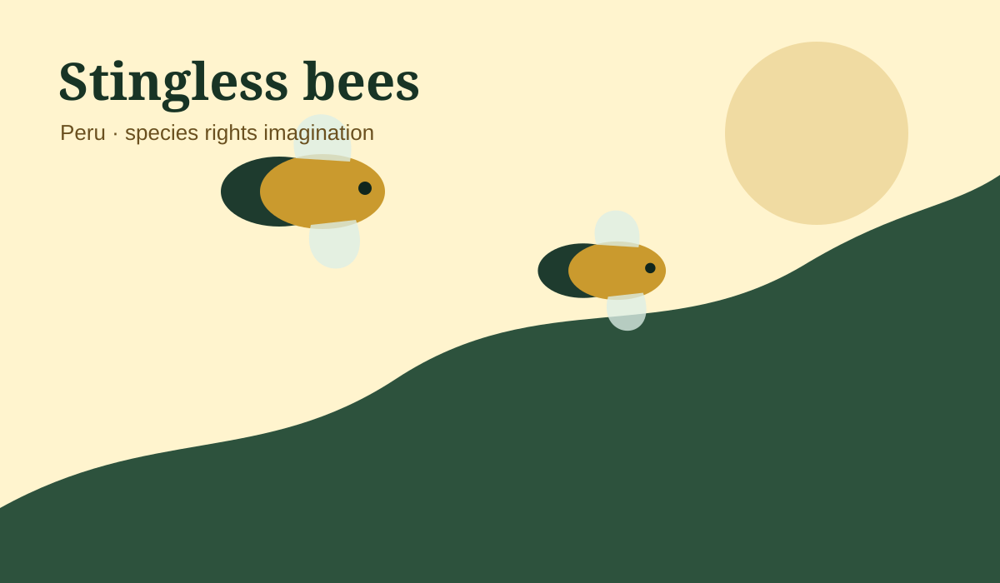
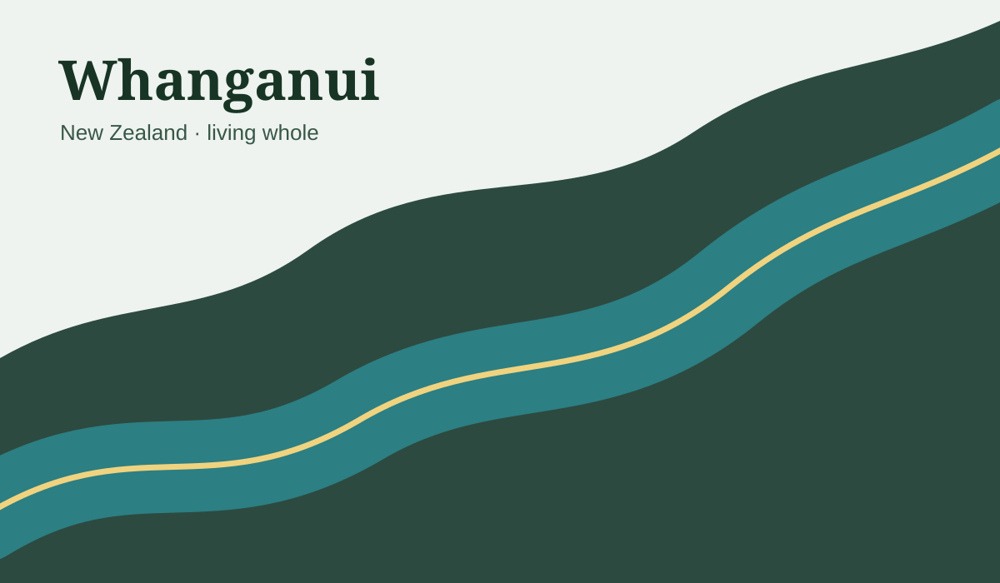
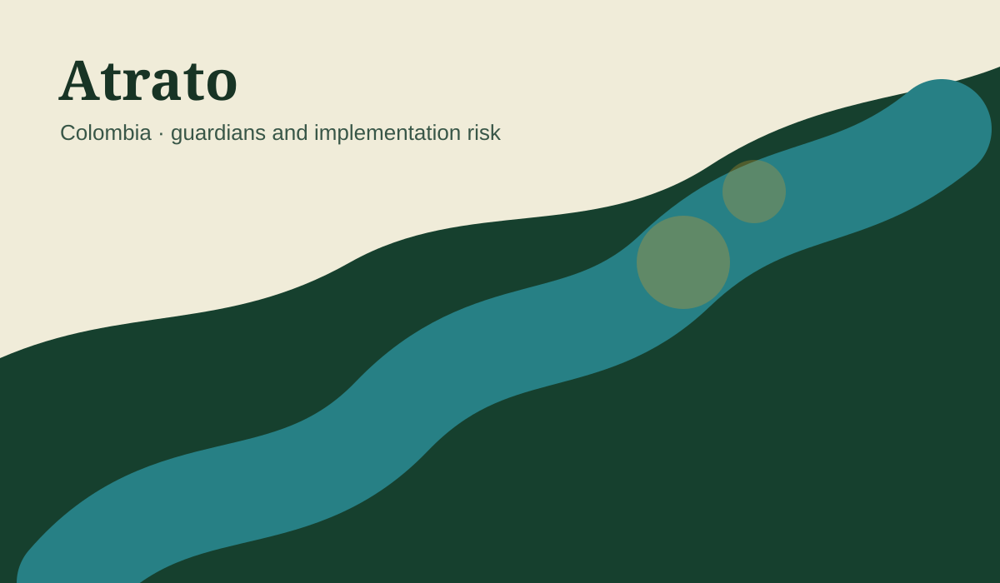

Reconnect with the map
Review the complete synthesis and how it evolved from the first brief.
ReviewAn evolving collaboration architecture connecting WGA, Amazonas Sagrada and Willkamayu while preserving the autonomy, priorities and mandate of each initiative and territory.
Felipe and Simona completed their catch-up on 3 August 2026. No further collective decision has been made. This version assembles the full research, visual work and open questions for correction by Simona and the wider team.
Review the complete synthesis and how it evolved from the first brief.
ReviewLook at WGA possibilities, the two territorial pathways, legal readiness and the ally map.
ExploreFlag inaccuracies, missing context, boundaries and assumptions that should not be carried forward.
CorrectDecide whether to shape a bounded 60–90 day Scoping & Readiness phase.
DecideThis integrated version preserves the original foundation while making visible what has emerged since the first conversation: more people, clearer technical possibilities, stronger territorial links and clearer decisions still needed.
The original vision, working thesis and careful evidence-first pathway remain valid.
The people involved, the technical possibilities, the two-territory opportunity and the possible mutual value.
Correct the synthesis, choose a first shared outcome and clarify participation, limits and feasibility.
The original sequence still works, but it refers mostly to territorial protection work. The collaboration itself is on a different path and needs its own clarity.
Now: synthesize what has emerged across the conversations—including the catch-up with Simona—then confirm the first shared outcome before defining commitments and action.
Measurement should happen once the group is clearer about what the evidence needs to help understand, protect, decide or unlock.
WGA, Amazonas Sagrada and Willkamayu remain distinct initiatives. Converging Waters is currently an exploratory collaboration layer — not an umbrella organization and not a merger.
Each project retains its own identity, priorities and freedom of action.
Shared work should create visible value for every participating project.
No role, resource, commitment or public association is assumed without confirmation.
Contributions, communities and territorial actors should receive fair recognition.
Collection, access, use and benefit should follow agreed consent and governance.
Some work may be shared; other work should remain project-specific.
The goal is not simply to collect data, but to connect question, evidence, shared understanding and practical action across two linked territories.
Portable eDNA, metagenomic observation, environmental metadata, field nodes, provenance, federated environmental data and bioacoustics.
Willkamayu and Amazonas Sagrada can function as two distinct ecosystems for learning, piloting and comparison.
Two different ecosystems may help reveal what can be shared and what must remain locally specific.
Question → Evidence → Shared understanding → Decision → Protection or regeneration.
Stanley's contributions made WGA's possible role more concrete. Simona's review is now invited to correct the framing, availability and boundaries. These remain emerging possibilities, not confirmed commitments.
Portable eDNA and metagenomic observation across water, soil and other environmental samples.
Sensors, GPS, time, metadata, field nodes and traceable provenance around each observation.
Bioacoustics, a federated atlas and community participation with appropriate data stewardship.

Portable field scienceSample → sequence → map → discover. Sacred Valley possibilityPlace-based learning and river observation.
A design principlePeople closest to a fragmented system should help build its infrastructure.
Sacred Valley possibilityPlace-based learning and river observation.
A design principlePeople closest to a fragmented system should help build its infrastructure.
A compact, visual checklist of the ideas, tools and reference examples Stanley has already shared, now with cleaner crops and click-through links on every card.

Data aggregation across ecosystem signals to understand relationships, shifts and changing conditions over time.
Open reference
Raspberry Pi or Jetson-style micro-computers integrated into low-footprint biomonitoring operations.
Open reference
Compact hardware for collecting environmental metadata such as temperature, pressure, wind and water pH.
Open reference
BirdNET and Merlin-style sound identification as proof that distributed community data can create powerful monitoring systems.
Open reference
Raspberry Pi-powered marine robots as a concrete example of rugged, affordable sensing systems in real environments.
Open referenceWGA field imagery that helps the group visualize how sampling, portable equipment and local participation could come together.
Open referenceThese are the main public or semi-public links already referenced, now shown as visual cards so the group can open them directly from the page.
Best quick overview of WGA's current public positioning, capabilities and framing.
Open siteUseful for grounding the conversation in monitoring, data patterns and environmental observation logic.
Open siteA more field-facing narrative about learning, portable science and local participation.
Open siteA narrative reference for how Stanley frames lived experience, data and story in a compelling way.
Open siteThe purpose is not only to admire the possibilities, but to identify what is relevant, realistic and worth scoping first.
Equipment, technical support, costs, timing, field requirements, data governance and what is realistic for each territory.
The work can demonstrate need, feasibility and fundability.
Converging Waters can become a useful collaboration layer between three autonomous initiatives.
Willkamayu may develop into a guardian-led, evidence-based river-protection and regeneration pathway. Amazonas Sagrada may strengthen its own regenerative-enterprise, conservation, community and territorial priorities. WGA may contribute scientific infrastructure, citizen-science methods, data governance, storytelling and enabling partnerships.
The convergence becomes credible only if purpose, mandate, evidence, legal design, responsibilities and financing are developed before public escalation.
The 2025 JRVS process generated useful early framing.
It is currently paused.
A new legal vehicle can be designed when the ground is ready.
Felipe and María Gracia now explore independently.
A legal vehicle remains to be defined.
These are proposed contribution areas for reflection; no fixed roles are assumed.
Contribution areas remain provisional and should be corrected by each person.
Future guardians and communities must become structural participants, not peripheral beneficiaries.
The group does not need perfect agreement before moving. It needs a light, visible process that protects autonomy, prevents assumptions and closes every conversation with a next step.
Shared purpose, one 60–90 day result, realistic contributions, clear boundaries and an agreed review date.
Working circle, specific contributor, advisor or informed ally. Silence means no active commitment yet — not consent and not rejection.
Deep preparation, light proposal, explicit consent, documented decisions and one named owner for every next action.
The collaboration layer is useful only where it creates identifiable value for WGA, Amazonas Sagrada, Willkamayu and the territories and communities involved.
Common learning infrastructure, protocols where appropriate, cross-territorial storytelling, selected joint funding opportunities and a replicable collaboration method for living waters.
A single jointly reviewed brief can convert the exploratory convergence into a credible basis for field action without prematurely locking the group into a pilot.
Clarify the collaboration, the two territorial learning agendas, WGA feasibility and one realistic preliminary pilot path per territory.
The goal is to review the synthesis efficiently: correct the map, state boundaries, identify real value and clarify the level of participation each person actually wants.
What is inaccurate, missing or overstated?
What should not be assumed about your project, role or resources?
What would make this collaboration genuinely useful for your project?
Working circle, specific contributor, advisor / ally or staying informed for now?
The value may emerge through selective, respectful convergence.
Citizen science and eDNA infrastructure.
Patrick and Chelsea’s sister model.
Felipe and María Gracia’s exploratory pathway.
The river connects water, food, culture, tourism, health and downstream justice.
Protection would create a chain reaction.
That is the opportunity.
It asks for wise timing.

This may be WGA’s most important contribution.
Citizen science can train the social body that may later sustain guardianship.
Future guardians, students, collectives and volunteers can learn to sample, map and report.
The evidence can support restoration, public policy, funding and future legal action.
Measurement is not the goal. It serves protection, remediation, recovery, stewardship and better collective decisions.

Before selecting sensors, sequencing tools or field methods, the collaboration should agree on what it needs to learn, for whom, and what ecological, legal, territorial or funding decision the evidence should unlock.
For Willkamayu this includes an explicit legal-protection and guardianship horizon. For Amazonas Sagrada, the appropriate territorial, community, ecosystem and legal opportunities must be explored autonomously and without imposing the Willkamayu route.
Build territorial legitimacy, legally useful evidence, monitoring capacity and a credible multitrack pathway capable of preventing harm, supporting remediation and sustaining care.
Possible areas include territorial security, community rights, water and sanitation, conservation agreements, biodiversity and data governance, benefit-sharing and protection of a defined ecosystem. Rights of Nature is a possibility to assess, not a predetermined objective.
Defines the protection objective, representation and mandate, evidence requirements, permits, safeguards, institutional pathways, remedies and compliance monitoring.
The shared layer connects capacities without collapsing the autonomy of each person, initiative or territory.
Upstream responsibility. Downstream justice.
San Jerónimo PTAR treats Cusco wastewater before discharge to the Huatanay.
SUNASS inspection noteProInversión reported expansion needs and an estimated US$46M project.
ProInversión sourceWhat is the real downstream impact on the Vilcanota?
Add to validation backlogConvergence must create value for every actor.
External support has high potential and awaits confirmation.
Partner names and logos can be used carefully after written permission.
Chelsea strengthens the execution and visibility side.
Use the logic and adapt the model wisely.
The Amazon needs protection policies and strong economic alternatives.
It needs economic alternatives that make conservation rational.
The Sacred Valley needs the same logic around water.
Nothing should be promised before testing.
WGA may help connect evidence, data governance, partnerships and financing logic; specific roles remain to be confirmed.
Any description of Simona’s background, WGA capabilities or availability must be corrected and confirmed directly by Simona and Stanley.
The matrix distinguishes current participation, user-reported interest and still-unvalidated institutional possibilities.
| Actor | Possible contribution | Status | Validation needed |
|---|---|---|---|
| WGA / Stanley + Simona | Technical architecture, citizen science, data governance, partnerships, storytelling and possible green-finance framing. | Current Current relationship; Simona catch-up completed and this brief is being shared. | Correct the description of WGA capabilities, define availability, scope, costs and decision authority. |
| Amazonas Sagrada / Chelsea + Patrick | Regenerative enterprise, community benefit, water and sanitation, engineering, GIS, bioremediation and pilot feasibility. | Current Current collaboration participants; territory-specific priorities remain autonomous. | Confirm the value of Converging Waters for Amazonas Sagrada and what should or should not be shared. |
| Willkamayu / Felipe + María Gracia | River-protection vision, climate and ecological science, alliances, synthesis, citizen engagement and territorial exploration. | Current Current Willkamayu exploration. | Clarify mandate, governance, workload, compensation, legal structure and community participation. |
| Centro Bartolomé de Las Casas (CBC)New focus | Territorial governance, intercultural dialogue, community processes, water and soil governance, climate resilience and rights. | Exploratory Previously identified and now highlighted for renewed exploration; no institutional commitment assumed. | Identify the relevant team or program, mutual value, scope, safeguards and formal point of contact. |
| Pavel MarmanilloNew focus | Environmental and social activism, professional local communication, community relationships and Sacred Valley reach. | Exploratory Newly highlighted potential ally based on Felipe’s local knowledge. | Confirm interest, preferred role, availability, constituencies represented and boundaries of representation. |
| Carlos — local environmental and ecotourism professionalNew focus | Local environmental and ecotourism knowledge, territorial context, possible team support and alliance development. | Exploratory Has expressed interest in becoming involved; role not defined. | Complete profile, clarify expected contribution, time, affiliation, compensation and decision authority. |
| Valle Sagrado Verde / Joaquín Randall | Restoration, brigades, reforestation and community work. | Unconfirmed Warm access and prior informal interest. | Formal conversation, fit with river work, capacity and scope. |
| SPDA | Peruvian environmental law, public policy and institutional strategy. | Unconfirmed High-value prospective legal ally; support unconfirmed. | Interest, scope, conflicts, resources and lead contact. |
| Earth Law Center | Rights of Nature, river guardianship, comparative law, legal education and strategic advisory experience in Peru. | Unconfirmed Prospective early legal-design adviser; no formal support or role assumed. | Readiness for outreach, requested role, local counsel model, timing and conditions. |
| Municipality of Calca | Local coordination, public policy, possible ordinance pathway and access to municipal actors. | Unconfirmed Perceived potential alignment only. | Political and technical validation, competences, continuity and nonpartisan safeguards. |
| UNSAAC and qualified laboratories | Scientific validation, students, sampling methods, accredited analysis and independent review. | Unconfirmed To be approached. | Faculty champions, laboratory capacity, accreditation, costs and chain-of-custody requirements. |
| Tourism and hotel organizations | Water responsibility, co-funding, visitor education, restoration sponsorship and sector standards. | Unconfirmed Potential sector allies. | Willingness to accept measurable obligations, local-benefit rules and anti-greenwashing safeguards. |
| Green Heroes and other local collectives | Cleanup, education, volunteers, citizen science and communications. | Unconfirmed To be mapped and validated. | Capacity, continuity, governance fit, safeguarding and quality-control needs. |
| Communities, water-user organizations and local authorities | Territorial knowledge, legitimacy, mandate, monitoring, stewardship and accountability. | Unconfirmed Essential future participants; no representation should be presumed. | Consent, assemblies, representative structures, priorities, risks and benefit-sharing. |
| Schools, youth monitors and universities | Education, long-term river literacy, citizen-science participation and continuity. | Unconfirmed Future possibility. | Permissions, safeguarding, training, data quality and institutional partners. |
The immediate need is a clear agreement of will, decision rights and representation—not necessarily a new legal entity.
A collaboration layer among autonomous projects and people. It can coordinate shared learning, evidence, partnerships and selected initiatives without absorbing WGA, Amazonas Sagrada or Willkamayu.
The pathway with an explicit river-protection, remediation, guardianship and legal-readiness horizon. It may eventually require its own vehicle, but that decision should follow mandate and operational need.
An autonomous regenerative enterprise and territorial project. Participation in shared capacities must support its own priorities, community relationships and governance rather than impose the Willkamayu model.
First: close a basic agreement of will and organization. Second: obtain early legal and institutional design advice. Third: decide whether Willkamayu needs a legal entity, a temporary host or continued collective operation.
Two to four pages can create sufficient clarity without pretending the collaboration is fully designed.
The question is not simply whether to incorporate, but what capacity is needed, by when, and under whose governance.
| Scenario | When it works | Advantages | Main risks | Adoption signal |
|---|---|---|---|---|
| Organized informal collective | Exploration, design, voluntary research and early relationships. | Flexible, low-cost and reversible. | Personal liability, weak contracting capacity, unclear ownership and continuity. | Appropriate while no material funds, contracts, staff, equipment or field liability are involved. |
| Temporary host organization | First grant, contract, equipment purchase or pilot that needs an existing counterparty. | Faster operational capacity without immediate incorporation. | Dependence, administrative costs, identity dilution and loss-of-control risks. | Use only with clear agreements on money, data, equipment, identity, obligations and exit. |
| Own nonprofit association | Sustained protection program, funding, hiring, contracting, monitoring and guardianship. | Autonomy, continuity, bankability and formal governance. | Premature membership, wrong statutes, administrative burden and weak territorial representation. | Adopt when mandate, stable team, recurring obligations and a fit-for-purpose governance model exist. |
| Commercial vehicle for a defined activity | Specific revenue-generating services or products separated from the protection mission. | Can isolate commercial operations and investment. | Mission drift and inappropriate ownership of common or community value. | Only when a clearly bounded commercial function genuinely requires it. |
Provisional recommendation: organized collective + short written agreement + possible host for specific needs, while undertaking legal and organizational scoping.
Any future Drive, canonical memory, AI OS, GitHub repository or automation should be established specifically for Converging Waters / Willkamayu and kept separate from Norte Solar’s corporate systems, ownership and canonical memory unless an explicit, documented arrangement is later approved.
This candidate map can mature through listening and mandate.
| Candidate group | Potential role | What must be validated |
|---|---|---|
| Alto Vilcanota communities | Headwater and source protection. | Exact communities, legal status and assembly mandate. |
| La Raya / Canchis / Canas / Quispicanchi actors | Source-area legitimacy. | Precise basin link and local willingness. |
| Communities near Ausangate / Sibinacocha | High-mountain water stewardship. | Direct hydrological relevance and mandate. |
| Q’ero / paqo lineages | Cultural and spiritual guidance. | Territorial link, consent and community authorization. |
| Sacred Valley communities | Middle-basin monitoring and local legitimacy. | Local priorities and representative mechanism. |
| Women-led groups | Care-centered governance and public legitimacy. | Whether an existing network can lead. |
| Youth monitors | Sampling, data and storytelling continuity. | Schools, permissions and training capacity. |
| Juntas de usuarios / irrigation groups | Water-use legitimacy and practical hydrology. | Alignment with ecological rights language. |
| Lower Urubamba communities | Downstream impact representation. | Representative organizations and consent. |
| Citizen science collectives | Monitoring, restoration and reporting. | They can support while legal representation remains mandate-based. |
Recreation must follow restoration.
The legal function should help define purpose, mandate, proof, permissions, safeguards, institutions and remedies across the entire learning cycle.
One accountable Peruvian-qualified professional responsible for integrating the protection objective, legal pathways, evidence strategy, risk and institutional sequencing.
A small review network spanning environmental and water law, constitutional or strategic litigation, Indigenous and territorial rights, administrative law and comparative Rights of Nature.
Communities, guardians, organizations and legitimate local actors determine whether and how the river or territory can be represented.
The sprint should reduce uncertainty and shape the scientific, territorial and organizational work that follows.
| Route | Possible result | Who may initiate | Evidence needed | Forum | Main uncertainty |
|---|---|---|---|---|---|
| Administrative | Inspection, supervision, corrective measures, permits or compliance. | Communities, affected actors, organizations or authorities—subject to legal review. | Compatible monitoring, documented impacts, jurisdiction and chain of custody. | ANA, OEFA and other competent authorities. | Fragmented competences and procedural fit. |
| Municipal / regional | Policy, ordinance, recognition, coordination or local protection. | Subnational authorities with an aligned territorial coalition. | Territorial rationale, public interest, competences and implementation plan. | Municipality or Regional Government. | Scope, continuity and enforceability. |
| Judicial / constitutional | Rights recognition, prevention, restoration, institutional duties or protective orders. | Actors with standing and legitimate mandate. | Damage or risk, ecological dependence, causation, mandate, requested remedies and implementation capacity. | Peruvian courts. | Standing, precedent transferability, proof and implementation. |
| Legislative | Specific or general framework for protection and governance. | Coalition, representatives and public institutions. | Strong case, public legitimacy, comparative models and implementation design. | Congress or other norm-making bodies. | Political timing and duration. |
| Contractual / community | Conservation agreements, data rules, stewardship commitments and benefit-sharing. | Rights-holders, landholders, communities and participating entities. | Consent, representation, clear obligations, monitoring and dispute rules. | Participating parties and relevant registries/authorities. | Representativeness and long-term compliance. |
Earth Law Center’s Latin America program reports multi-year support to the Marañón case through an amicus brief, capacity building and expert testimony. That makes ELC a strong prospective design adviser, but not a confirmed partner.
Share a concise brief: Converging Waters, Willkamayu’s explicit protection horizon, Amazonas Sagrada’s autonomous exploration, the role of baseline/MRV/citizen science, what remains open and the questions for ELC.
After internal alignment: preliminary protection theory, actor and mandate map, threats, baseline gaps, MRV plan, data governance, local legal allies, budget, timeline and a clearly defined role request.
Core principle: do not collect science first and search for legal relevance later. Legal and territorial strategy should help decide what evidence, participation, documentation and safeguards are needed from the beginning.
This is a strategic scoping summary, not legal advice.
Images are local SVG illustrations, so the deck remains stable.

Marañón RiverKukama women led the case.
Evidence and lived harm mattered.
Compliance requires long pressure.
Build guardians before filing.

Lake TiticacaWomen-led advocacy built regional momentum.
Implementation and competencies need verification.
Use ordinances as one pillar among several.

Stingless bees
Whanganui
AtratoSafeguards make the careful first phase stronger.
All figures remain illustrative planning ranges. Scope, local costs, legal work, community participation, laboratories, travel and field design require validation before any funding ask.
Desk research, legal memo, stakeholder map, field design and first partner conversations.
Listening, sample design, pilot site selection, guardian mapping and preliminary funding package.
Citizen science, monitoring, legal pathway, technical pilots, restoration design and coordination.
Impact, visibility and funding can reinforce each other.
A phased readiness process can integrate the follow-up with Simona, internal organization, legal design, ally validation and a minimum evidence plan.
Share this detailed brief, collect corrections from Simona and other participants, confirm project autonomy, roles that are explicitly not assumed and the scope of a short collaboration accord.
Draft the Initial Collaboration Accord, define legal questions, compare collective/host/association options and prepare the Earth Law Center exploratory brief.
Map priority questions, mandate-bearing actors, pilot locations, baseline gaps, MRV requirements, permits, data safeguards and community-engagement routes.
Hold careful exploratory conversations with CBC, Pavel, Carlos, SPDA, ELC, Valle Sagrado Verde, academic/lab actors and relevant public institutions.
Produce a corrected collaboration map, one legal objective per territory, pilot shortlist, costed workplan, funding options and a go / revise / separate-paths decision.
This learning agenda protects rigor.
| Question | Why it matters | Owner candidate | Status |
|---|---|---|---|
| What does WGA actually want and have capacity to contribute in the next 3–6 months? | Prevents theoretical capability from becoming an assumed commitment. | Stanley + Simona | Open; Simona review pending. |
| What are the priority decisions and evidence needs in each territory? | Determines baseline, MRV, methods and pilot value. | Each project + territorial actors | Open. |
| Who are legitimate guardian and mandate-bearing candidates by basin segment? | Legal standing, ethical legitimacy and long-term stewardship. | Willkamayu circle + local allies + counsel | Open; requires listening. |
| Which legal pathway is plausible for Willkamayu? | Shapes evidence, institutional strategy and remedies. | Legal Strategy Lead + advisory circle | Not yet scoped. |
| What legal opportunities, if any, fit Amazonas Sagrada? | Avoids imposing the Willkamayu objective. | Amazonas Sagrada + communities + counsel | Autonomous exploration. |
| Does Converging Waters need a formal vehicle, and when? | Clarifies liability, funding, contracts, equipment and continuity. | Small legal-organizational team | Compare collective, host and association. |
| Which new allies are interested and what can they legitimately contribute? | Converts names into accountable relationships without overclaiming. | Felipe + relevant project leads | CBC, Pavel and Carlos newly highlighted. |
| What is the minimum useful 60–90 day budget? | Supports fundability and accountability. | Core participants | Needs costing after scope. |
| What independent knowledge infrastructure is needed? | Protects ownership, continuity and separation from Norte Solar systems. | Felipe / personal project governance | Personal-scope package staged locally; GitHub migration pending preview approval. |
| When is the project ready for external visibility? | Protects communities, credibility and legal strategy. | Whole collaboration + territorial mandate | Visibility only after evidence, consent and readiness. |
These fronts are connected, but they should not all become simultaneous commitments. Each needs an owner, a question, an output and a readiness threshold.
Purpose, autonomy, decision rights, representation, data, credit, commitments, review and exit.
One objective per territory, pathways, evidence, mandate, risk and legal-team design.
Priority decisions, indicators, protocols, verification, reporting, recovery monitoring and adaptive learning.
Communities, water users, rights-holders, local institutions, basin segments, risks and legitimate representation.
Ownership, access, consent, Indigenous and community knowledge, provenance, privacy, publication and commercial use.
Clarify interest, capacity, conflicts, decision authority, expectations and boundaries for every prospective ally.
Site selection, comparison, permissions, before/after measurement, cost, maintenance and unintended effects.
Grants, philanthropy, sector contributions, impact investment and long-term stewardship funding.
Translate complexity without overclaiming, protect sensitive information, secure consent and give territorial actors appropriate credit.
Collective, host, association or bounded commercial vehicle based on actual functions and liabilities.
Canonical memory, decisions, source register, Drive, GitHub, versioning and automation under project-specific governance.
Bring legal, scientific, territorial, financial and organizational findings back into one current synthesis.
External facts should be checked at the source. Internal descriptions remain subject to correction by the people and projects concerned.
Program and Marañón case materials. Reports support through amicus work, capacity building and expert testimony.
Official Loreto court notice on the appellate confirmation and protective measures.
Current public site, Simona’s WIP site, and Stanley’s storytelling reference.
Earlier internal HTML brief; later purpose/MRV HTML iterations; process and collaboration graphics; Amazonas Sagrada proposal; Patrick and María Gracia profiles; legal-strategy and organizational-scoping notes; recent discussion with Simona.
The consolidated process and collaboration graphic from the prior iteration is embedded directly in this page, alongside the editable HTML/CSS expansion.